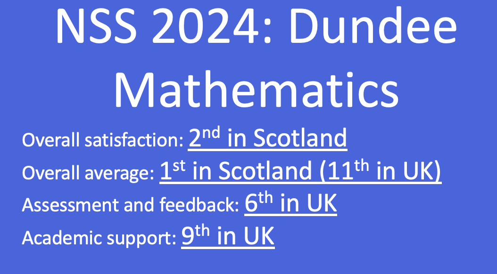
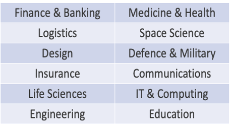
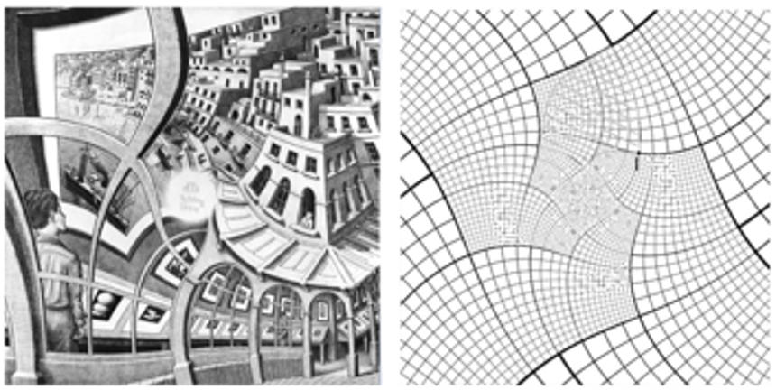

Carnoustie High Talk
Dr. Philip Murray
University of Dundee
2026-06-15
Why Mathematics?
- route into many numerate professions
- diverse career opportunities
- learn a language that can be applied in many contexts
- well paid jobs
- learn skills for the digital age
- Because you enjoy it!
What happens on a Mathematics degree?
- Build from Higher/Advanced Higher Mathematics
- Learn how to apply mathematics to real world problems
- Develop programming skills needed to solve mathematical problems
- Develop communication skills

Learn to become a logical numerate problem solver
Logical numerate problem solvers are valued

www.ima.org
What have recent Dundee graduates gone on to do?
- Actuaries
- Accountants
- Data analysts
- Engineers
- Trade analysts
- App. developers
- Teachers
- Academia
- Programmers
How is Mathematics taught at Uni?
develop core syllabus (e.g. algebra and calculus)
learn about new mathematical topics (e.g. statistics, dynamical systems, differential geometry, operational research …)
lectures (50 minute, twice a week)
weekly tutorials (usually associated with worksheets)
computer labs (develop programming skills)
Flex your mathematical muscles with a final year project
- develop independent problem solving skills
- develop programming and presentation skills
- The $25,000,000,000 eigenvector
- The mathematics of monopoly
- How sat. navs work?

Today’s activity
Mathematical modelling
- Formulate problem
- Define variables
- Governing equations
- Calculate solutions
- Insight
Musical notes
- Why does the pitch of a string change as we adjust the tuning heads?
- Why does the pitch change when string length changes (e.g. by clamping strings on frets)?
- Why do some notes sound nice together?
- Why does an expensive musical instrument sound nicer than a cheaper one?
A mathematical model of a stretched string
Formulation
a stretched string of length \(L\) (e.g. a guitar string).
tension, \(T\), and line density, \(\mu\).
Let \(u(x,t)\) represent the displacement of the string at a given position, \(x\), at time, \(t\).
Plucking initiates the vibration which generates the sound.
The wave equation
The equation is \[ \frac{\partial ^2 u}{\partial t^2}=c^2 \frac{\partial ^2 u}{\partial x^2}, \]
The wavespeed \[ c=\sqrt{\frac{T}{\mu}}, \]
Assume static clamped string boundary and initial conditions
Standing wave solutions
Standing waves \[ u(x,t)=\sin(\frac{n\pi x}{L})\cos(\frac{n\pi c t}{L}), \quad n=1,2,... \]
The frequency is \[ f=\frac{n}{2L}\sqrt{\frac{T}{\mu}}, \quad n =1,2,... \]
Computing a solution
#| standalone: true
#| components: [viewer]
#| viewerHeight: 650
from shiny import App, ui, render, reactive
from shinywidgets import output_widget, render_widget
import numpy as np
import plotly.graph_objects as go
from scipy.signal import spectrogram
import matplotlib.pyplot as plt
app_ui = ui.page_fluid(
ui.h2("Wave Equation on a Vibrating String"),
ui.p(
"Interactive solution of the 1D wave equation."
),
ui.layout_sidebar(
ui.sidebar(
ui.input_slider(
"L",
"String Length L (m)",
min=0.5,
max=2.0,
value=1.0,
step=0.05,
),
ui.input_slider(
"T",
"Tension T (N)",
min=1,
max=500,
value=100,
step=1,
),
ui.input_slider(
"mu",
"Linear Density μ (kg/m)",
min=0.001,
max=0.05,
value=0.01,
step=0.001,
),
ui.input_slider(
"n",
"Mode Number n",
min=1,
max=6,
value=1,
step=1,
),
ui.input_slider(
"A",
"Amplitude A",
min=0.1,
max=2.0,
value=1.0,
step=0.1,
),
ui.input_slider(
"time",
"Time t (s)",
min=0.0,
max=2.0,
value=0.0,
step=0.01,
animate=True,
),
),
ui.div(
ui.h4("Computed Quantities"),
ui.output_text_verbatim("summary"),
ui.hr(),
ui.h4("Wave Motion"),
output_widget("wave_plot"),
),
),
)
def server(input, output, session):
@reactive.calc
def wave_speed():
return np.sqrt(
input.T() / input.mu()
)
@reactive.calc
def frequency():
return (
input.n()
* wave_speed()
/ (2 * input.L())
)
@output
@render.text
def summary():
return (
f"Wave speed c = {wave_speed():.2f} m/s\n"
f"Frequency f = {frequency():.2f} Hz\n\n"
f"Wave equation:\n"
f"u_tt = c² u_xx"
)
# --------------------------------------------------------
# Time-dependent wave solution
# --------------------------------------------------------
@output
@render_widget
def wave_plot():
L = input.L()
n = input.n()
A = input.A()
c = wave_speed()
t = input.time()
x = np.linspace(0, L, 400)
# Exact standing-wave solution
y = (
A
* np.sin(n * np.pi * x / L)
* np.cos(n * np.pi * c * t / L)
)
fig = go.Figure()
fig.add_scatter(
x=x,
y=y,
mode="lines",
)
fig.update_layout(
height=450,
title=(
f"Standing Wave "
f"(t = {t:.2f} s)"
),
xaxis=dict(range=[0, 2]),
yaxis=dict(range=[-2, 2]),
xaxis_title="Position x (m)",
yaxis_title="Displacement",
)
fig.update_yaxes(
range=[-2.1, 2.2]
)
return fig
app = App(app_ui, server)Representing general sounds
Sound waves are pressure/density disturbances that propagate through a medium (e.g. air).
A microphone detects pressure waves recorded at a given point in space.
We can represent a signal as a sum of terms of different frequencies.
This information can also be presented in a spectrogram. We expect noise to have a messy spectrogram as there are components with lots of frequencies.
Spectrogram of wave equation solution
#| standalone: true
#| components: [viewer]
#| viewerHeight: 650
from shiny import App, ui, render, reactive
from shinywidgets import output_widget, render_widget
import numpy as np
import plotly.graph_objects as go
from scipy.signal import spectrogram
import matplotlib.pyplot as plt
# ============================================================
# UI
# ============================================================
app_ui = ui.page_fluid(
ui.h2("Wave Equation on a Vibrating String"),
ui.p(
"Interactive solution of the 1D wave equation."
),
ui.layout_sidebar(
ui.sidebar(
ui.input_slider(
"L",
"String Length L (m)",
min=0.5,
max=5.0,
value=1.0,
step=0.1,
),
ui.input_slider(
"T",
"Tension T (N)",
min=100,
max=5000,
value=4000,
step=1,
),
ui.input_slider(
"mu",
"Linear Density μ (kg/m)",
min=0.001,
max=0.05,
value=0.01,
step=0.001,
),
ui.input_slider(
"n",
"Mode Number n",
min=1,
max=6,
value=1,
step=1,
),
ui.input_slider(
"A",
"Amplitude A",
min=0.1,
max=2.0,
value=1.0,
step=0.1,
),
ui.input_slider(
"time",
"Time t (s)",
min=0.0,
max=2.0,
value=0.0,
step=0.01,
animate=True,
),
),
ui.div(
ui.h4("Wave Motion"),
output_widget("wave_plot"),
ui.hr(),
ui.output_plot("freq_plot"),
ui.h4("Computed Quantities"),
ui.output_text_verbatim("summary"),
ui.hr(),
),
),
)
def server(input, output, session):
@reactive.calc
def wave_speed():
return np.sqrt(
input.T() / input.mu()
)
@reactive.calc
def frequency():
return (
input.n()
* wave_speed()
/ (2 * input.L())
)
@output
@render.text
def summary():
return (
f"Wave speed c = {wave_speed():.2f} m/s\n"
f"Frequency f = {frequency():.2f} Hz\n\n"
f"Wave equation:\n"
f"u_tt = c² u_xx"
)
@output
@render_widget
def wave_plot():
L = input.L()
n = input.n()
A = input.A()
c = wave_speed()
t = input.time()
x = np.linspace(0, L, 400)
# Exact standing-wave solution
y = (
A
* np.sin(n * np.pi * x / L)
* np.cos(n * np.pi * c * t / L)
)
fig = go.Figure()
fig.add_scatter(
x=x,
y=y,
mode="lines",
)
fig.update_layout(
height=150,
title=(
f"Standing Wave "
f"(t = {t:.2f} s)"
),
xaxis=dict(range=[0, 2]),
yaxis=dict(range=[-2, 2]),
xaxis_title="Position x (m)",
yaxis_title="Displacement",
)
fig.update_yaxes(
range=[-2.1, 2.2]
)
return fig
@render.plot
def freq_plot():
window = 1024
overlap_fraction = 0.5
noverlap = int(
window * overlap_fraction
)
L = input.L()
n = input.n()
A = input.A()
c = wave_speed()
SAMPLE_RATE=1000.0
T=10.0
t = np.linspace(0,T,int(SAMPLE_RATE*T))
x_samp = L*0.333
# Exact standing-wave solution
y = (
A
* np.sin(n * np.pi * x_samp / L)
* np.cos(n * np.pi * c * t / L)
)
freqs, times, Sxx = spectrogram(
y,
fs=SAMPLE_RATE,
nperseg=window,
noverlap=noverlap,
)
# Convert to dB
Sxx_db = 10 * np.log10(
Sxx + 1e-10
)
fig, ax = plt.subplots(
figsize=(10, 5)
)
mesh = ax.pcolormesh(
times,
freqs,
Sxx_db,
shading="gouraud",
)
ax.set_yscale("log")
ax.set_xlabel("Time (s)")
ax.set_ylabel("Frequency (Hz)")
ax.set_title(
"Spectrogram"
)
fig.colorbar(
mesh,
ax=ax,
label="Power (dB)"
)
plt.show()
app = App(app_ui, server)Now we look at the spectograms of different sounds
- Play a single monotone note
- White noise
- A scale
- A major chord
Sound recording app
#| standalone: true
#| components: [viewer]
#| viewerHeight: 650
#|
from shiny import App, ui, reactive, render
import numpy as np
import matplotlib.pyplot as plt
from scipy.signal import spectrogram
SAMPLE_RATE = 44100
RECORD_SECONDS = 10
MAX_SAMPLES = SAMPLE_RATE * RECORD_SECONDS
app_ui = ui.page_fluid(
ui.tags.head(
ui.tags.script(
f"""
let audioContext;
let microphone;
let processor;
let recording = false;
async function startRecording() {{
if (recording) {{
return;
}}
recording = true;
console.log("Recording started");
const stream =
await navigator.mediaDevices.getUserMedia({{
audio: true
}});
audioContext =
new AudioContext();
microphone =
audioContext.createMediaStreamSource(stream);
processor =
audioContext.createScriptProcessor(
2048,
1,
1
);
microphone.connect(processor);
processor.connect(
audioContext.destination
);
const startTime = Date.now();
processor.onaudioprocess = function(e) {{
if (!recording) {{
return;
}}
const input =
e.inputBuffer.getChannelData(0);
const arr = Array.from(input);
Shiny.setInputValue(
"audio_chunk",
arr,
{{priority: "event"}}
);
const elapsed =
(Date.now() - startTime) / 1000;
Shiny.setInputValue(
"recording_time",
elapsed,
{{priority: "event"}}
);
if (elapsed >= {RECORD_SECONDS}) {{
recording = false;
processor.disconnect();
microphone.disconnect();
stream.getTracks().forEach(
track => track.stop()
);
console.log("Recording finished");
Shiny.setInputValue(
"recording_done",
Math.random(),
{{priority: "event"}}
);
}}
}};
}}
document.addEventListener(
"DOMContentLoaded",
function() {{
const btn =
document.getElementById("start");
btn.onclick = async function() {{
try {{
await startRecording();
}} catch(err) {{
console.error(err);
alert(
"Microphone error: " + err
);
}}
}};
}}
);
"""
),
),
ui.h2("Interactive Audio Spectrogram"),
ui.layout_sidebar(
ui.sidebar(
ui.input_action_button(
"start",
"Record / Re-record"
),
ui.hr(),
ui.input_slider(
"freq_lim",
"Frequency limits (Hz)",
min=50,
max=22050,
value=[50,2000],
step=20,
),
ui.input_select(
"scale",
"Frequency Scale",
choices={
"linear": "Linear",
"log": "Logarithmic",
},
selected="linear",
),
ui.input_slider(
"window",
"FFT Window Size",
min=256,
max=4096,
value=1024,
step=256,
),
ui.input_slider(
"overlap",
"Overlap (%)",
min=0,
max=95,
value=50,
step=5,
),
ui.input_checkbox(
"show_colorbar",
"Show Colorbar",
value=True,
),
),
ui.card(
ui.card_header("Status"),
ui.output_text_verbatim("status"),
),
ui.card(
ui.card_header("Spectrogram"),
ui.output_plot("spectrogram_plot"),
),
),
)
# =====================================================
# SERVER
# =====================================================
def server(input, output, session):
# Audio storage
recorded_audio = reactive.value(
np.array([], dtype=np.float32)
)
recording_complete = reactive.value(False)
# -------------------------------------------------
# Reset recording
# -------------------------------------------------
@reactive.effect
@reactive.event(input.start)
def _():
recorded_audio.set(
np.array([], dtype=np.float32)
)
recording_complete.set(False)
# -------------------------------------------------
# Receive audio chunks
# -------------------------------------------------
@reactive.effect
@reactive.event(input.audio_chunk)
def _():
if recording_complete.get():
return
chunk = np.array(
input.audio_chunk(),
dtype=np.float32
)
current = recorded_audio.get()
updated = np.concatenate([
current,
chunk
])
updated = updated[:MAX_SAMPLES]
recorded_audio.set(updated)
# -------------------------------------------------
# Recording complete
# -------------------------------------------------
@reactive.effect
@reactive.event(input.recording_done)
def _():
recording_complete.set(True)
# -------------------------------------------------
# Status text
# -------------------------------------------------
@output
@render.text
def status():
if recording_complete.get():
seconds = (
len(recorded_audio.get())
/ SAMPLE_RATE
)
return (
f"Recording complete.\n"
f"{seconds:.1f} seconds captured."
)
rt = input.recording_time()
if rt is None:
return (
"Press Record to begin."
)
return (
f"Recording... "
f"{rt:.1f} sec"
)
# -------------------------------------------------
# Spectrogram
# -------------------------------------------------
@output
@render.plot
def spectrogram_plot():
if not recording_complete.get():
fig, ax = plt.subplots()
ax.text(
0.5,
0.5,
"No recording yet",
ha="center",
va="center",
)
ax.axis("off")
return fig
audio = recorded_audio.get()
window = input.window()
overlap_fraction = (
input.overlap() / 100
)
noverlap = int(
window * overlap_fraction
)
freqs, times, Sxx = spectrogram(
audio,
fs=SAMPLE_RATE,
nperseg=window,
noverlap=noverlap,
)
# Convert to dB
Sxx_db = 10 * np.log10(
Sxx + 1e-10
)
fig, ax = plt.subplots(
figsize=(10, 5)
)
mesh = ax.pcolormesh(
times,
freqs,
Sxx_db,
shading="gouraud",
)
# Frequency range
ax.set_ylim(
input.freq_lim()[0],
input.freq_lim()[1]
)
# Linear / log scale
if input.scale() == "log":
ax.set_yscale("log")
ax.set_xlabel("Time (s)")
ax.set_ylabel("Frequency (Hz)")
ax.set_title(
"Spectrogram"
)
if input.show_colorbar():
fig.colorbar(
mesh,
ax=ax,
label="Power (dB)"
)
return fig
# =====================================================
# APP
# =====================================================
app = App(app_ui, server)
Outlook
- investigated a real world phenomenon mathematically and used a combination of analysis and computer programming to understand behaviour.
- can apply approach to other problems (e.g. financial markets, signals from medical devices etc.)
- The wave equation appears in many areas of mathematics (e.g. fluid dynamics, light propagation, quantum mechanics).
- It is usually a good strategy to study simpler versions of hard problems!